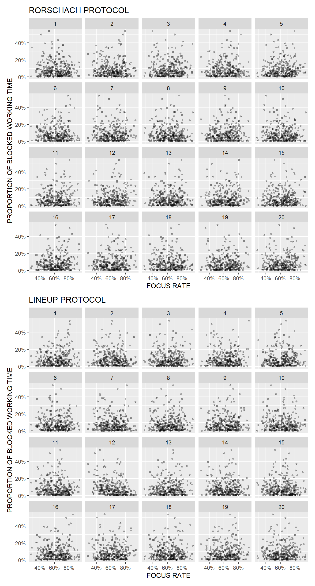
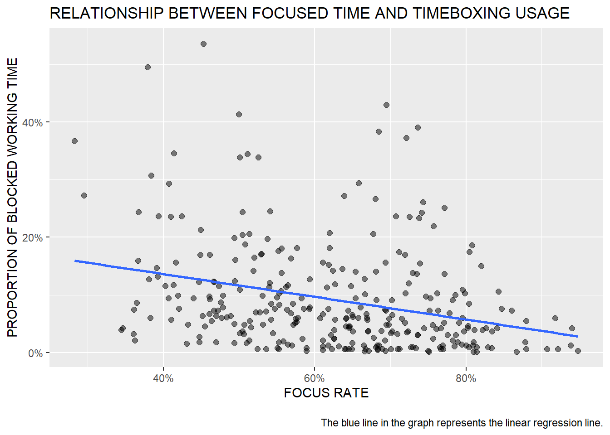
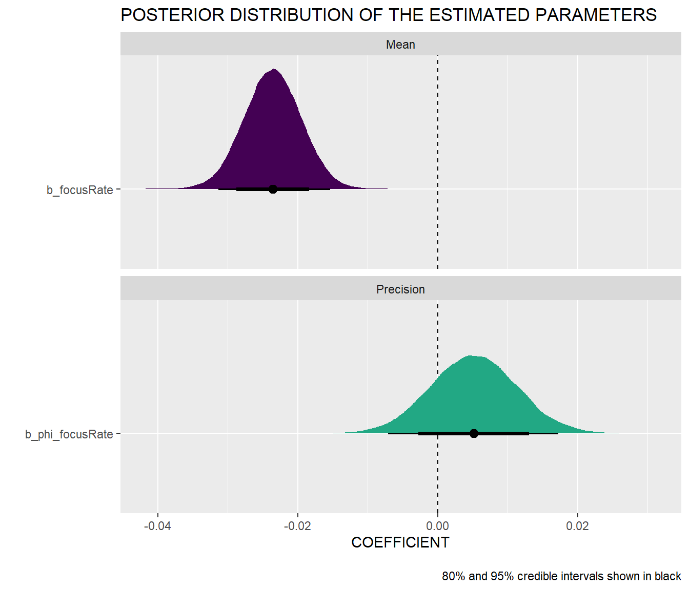
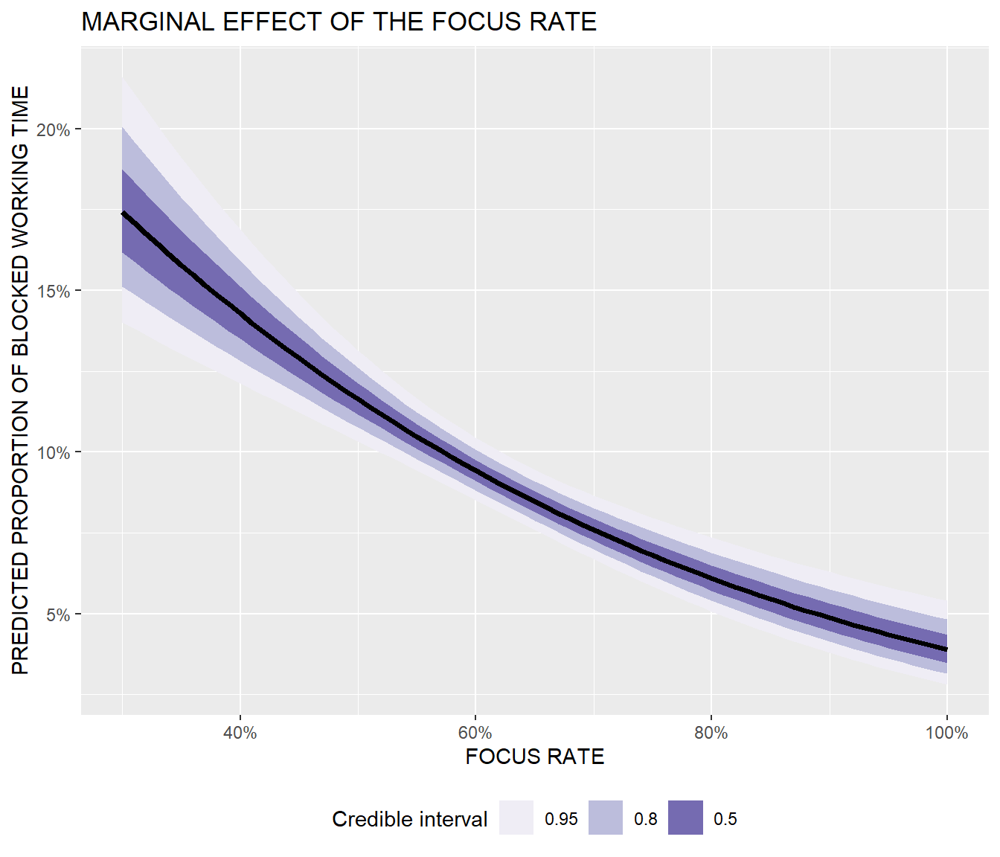

Visual statistical inference represents a valid alternative to standard statistical inference, and as a by-product it also helps with building intuition about the difference between signal and noise. Give it a try.
Do you have any experience with visual statistical inference? Not only is it a valid alternative to standard statistical inference, but as a by-product it helps with building intuition about the difference between signal and noise.
The basis of the method is a so-called lineup protocol that places a graph of the actual data between arrays of graphs of null data that are generated by a method consistent with the null hypothesis. The lineup is shown to one or more observers who are asked to identify the graph that differs. If an observer can pick out the actual data as different from the others, this gives weight to the statistical significance of the pattern in the graph.
Because people usually have a hard time recognizing randomness and tend to see patterns even where there are none, there is also a so-called Rorschach protocol that only displays graphs created with null datasets and which is used by observers to calibrate their eyes for variation due to sampling.
You can try it for yourself in the graphs below, which show the relationship between two variables from my current area of work (collaboration analytics), namely between time available for focused work and the use of timeboxing (productivity enhancing technique of assigning a fixed unit of time to an activity within which a planned activity takes place).
Use the first array of graphs (the Rorschach protocol) to calibrate your eye for randomness and then try to identify the actual data in the second array of graphs (the lineup protocol). What’s your guess? Which graph matches the actual data (1-20) and what relationship do you see in the data? You can give your guess in the comments.
# uploading libraries
library(tidyverse)
library(nullabor)
library(patchwork)
library(scales)
# uploading data
mydata <- readRDS("./visualInferenceData.RDS")
# lineup protocol
set.seed(1234)
d <- lineup(null_permute("propBlockedTime"), mydata)
lplot <- ggplot(data=d, aes(x = focusRate, y = propBlockedTime)) +
geom_point(alpha = 0.3, size = 1) +
facet_wrap(~ .sample) +
labs(
title = "LINEUP PROTOCOL",
x = "FOCUS RATE",
y = "PROPORTION OF BLOCKED WORKING TIME"
) +
scale_x_continuous(labels = scales::number_format(suffix = "%")) +
scale_y_continuous(labels = scales::percent_format())
# Rorschach protocol
dr <- rorschach(null_permute("propBlockedTime"), mydata, n = 20, p = 0)
rplot <- ggplot(data=dr, aes(x = focusRate, y = propBlockedTime)) +
geom_point(alpha = 0.3, size = 1) +
facet_wrap(~ .sample) +
labs(
title = "RORSCHACH PROTOCOL",
x = "FOCUS RATE",
y = "PROPORTION OF BLOCKED WORKING TIME"
) +
scale_x_continuous(labels = scales::number_format(suffix = "%")) +
scale_y_continuous(labels = scales::percent_format())
# combining plots
fplot <- rplot / lplot
print(fplot)

Here’s a check on your guess. The actual data are shown in chart # 12. As you can see in the chart below, the relationship between time for focused work and the use of timeboxing is slightly negative, which makes pretty good sense, because people who have enough time for focused work usually don’t have such a strong need to block out time for focused work in their calendar.
mydata %>%
ggplot(aes(x = focusRate, y = propBlockedTime)) +
geom_point(size = 2, alpha = 0.5) +
geom_smooth(method = "lm", se = F) +
scale_x_continuous(limits = c(NA,NA), labels = scales::number_format(suffix = "%")) +
scale_y_continuous(labels = scales::percent_format()) +
labs(
x = "FOCUS RATE",
y = "PROPORTION OF BLOCKED WORKING TIME",
title = "RELATIONSHIP BETWEEN FOCUSED TIME AND TIMEBOXING USAGE",
caption = "\nThe blue line in the graph represents the linear regression line."
)

We can also test the relationship between time for focused work and the use of timeboxing more formally by fitting a Bayesian beta regression model to the data. As you can see in the summary tables and charts below, the null value is safely outside the 95% credible interval of the mean of the focus rate parameter, and the marginal effect of focus rate clearly shows its negative relationship with the predicted proportion of working time blocked in the calendar. Note also that the relationship is non-linear, i.e. the marginal effect of the focus rate is different depending on its level.
# uploading libraries
library(brms)
library(bayesplot)
library(tidybayes)
library(ggdist)
# fitting Bayesian beta regression model
model <- brms::brm(
bf(
propBlockedTime ~ focusRate,
phi ~ focusRate
),
data=mydata,
family= Beta(),
seed = 1234,
iter = 20000,
warmup = 2000,
chains = 4,
cores = 6,
control = list(
adapt_delta = 0.9,
max_treedepth = 20
)
)
# summary of the fitted model
summary(model)
Family: beta
Links: mu = logit; phi = log
Formula: propBlockedTime ~ focusRate
phi ~ focusRate
Data: mydata (Number of observations: 306)
Draws: 4 chains, each with iter = 20000; warmup = 2000; thin = 1;
total post-warmup draws = 72000
Population-Level Effects:
Estimate Est.Error l-95% CI u-95% CI Rhat Bulk_ESS
Intercept -0.85 0.25 -1.33 -0.35 1.00 61653
phi_Intercept 2.09 0.39 1.30 2.84 1.00 59323
focusRate -0.02 0.00 -0.03 -0.02 1.00 57209
phi_focusRate 0.01 0.01 -0.01 0.02 1.00 56423
Tail_ESS
Intercept 54084
phi_Intercept 51459
focusRate 55167
phi_focusRate 51573
Draws were sampled using sampling(NUTS). For each parameter, Bulk_ESS
and Tail_ESS are effective sample size measures, and Rhat is the potential
scale reduction factor on split chains (at convergence, Rhat = 1).# visualizing posterior distribution of the estimated parameters
posterior_beta <- model %>%
gather_draws(`b_.*`, regex = TRUE) %>%
mutate(component = ifelse(str_detect(.variable, "phi_"), "Precision", "Mean"),
intercept = str_detect(.variable, "Intercept")) %>%
filter(intercept == FALSE)
ggplot(posterior_beta, aes(x = .value, y = fct_rev(.variable), fill = component)) +
geom_vline(xintercept = 0, linetype = "dashed") +
stat_halfeye(aes(slab_alpha = intercept),
.width = c(0.8, 0.95), point_interval = "median_hdi") +
scale_fill_viridis_d(option = "viridis", end = 0.6) +
scale_slab_alpha_discrete(range = c(1, 0.4)) +
guides(fill = "none", slab_alpha = "none") +
labs(
x = "COEFFICIENT",
y = "",
title = "POSTERIOR DISTRIBUTION OF THE ESTIMATED PARAMETERS",
caption = "\n80% and 95% credible intervals shown in black") +
facet_wrap(vars(component), ncol = 1, scales = "free_y")

# visualizing marginal effect of the focus rate
model_pred <- model %>%
epred_draws(newdata = expand_grid(focusRate = seq(30, 100, by = 1)))
ggplot(model_pred , aes(x = focusRate, y = .epred)) +
stat_lineribbon() +
scale_fill_brewer(palette = "Purples") +
labs(x = "FOCUS RATE",
y = "PREDICTED PROPORTION OF BLOCKED WORKING TIME",
fill = "Credible interval",
title = "MARGINAL EFFECT OF THE FOCUS RATE"
) +
scale_x_continuous(limits = c(NA,NA), labels = scales::number_format(suffix = "%")) +
scale_y_continuous(labels = scales::percent_format(accuracy = 1)) +
theme(legend.position = "bottom")

If you would like to apply the visual statistical inference approach to your own data, you can easily do so using the nullabor R package.